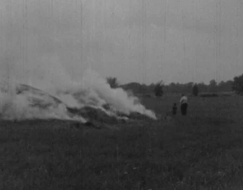
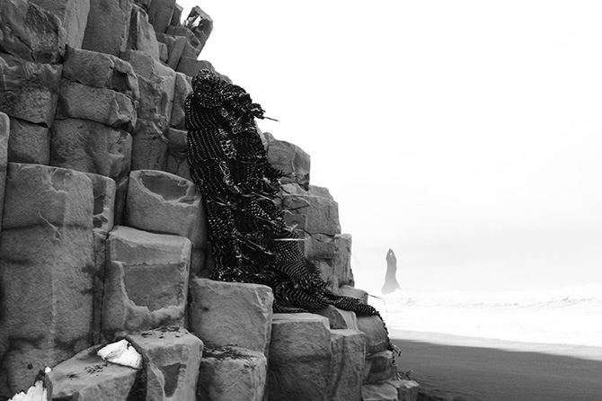
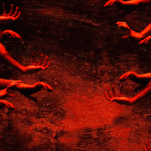
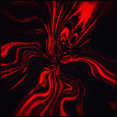
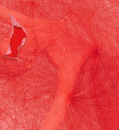

Birds
self harm, flashing lights
it has been grass for an hour. the road we walk on is a single straight path cutting through a field that has been dead for centuries. he's brought a bag smaller than the one he usually carries around, black and hanging loosely off one shoulder. he is relaxed, each step he takes flowing smoothly into the other, and every 5 minutes he stops because something has caught his eye, maybe a blade of grass that is slightly greener than the others, something like that. i focus on the green of his hoodie, the only color i see. it is bright lime at the top and fades out to white at the bottom.
where are you taking me?
you'll see. are you religious?
not really, are you?
you could say something like that. my dad talked a lot about it and i just slowly settled into it over time by my own. you know way back then we used to worship the sun and mountains and rivers.
oh. do you worship the sun?
no, i don't worship the sun. i can't blame anyone for worshipping the sun though. it's a practice that's died out long ago but the sun is the closest thing we have to a god we can see.
mm. you're right maybe.
i think the sun can breathe and eat like any other animal. sunlight is just the sun sweating. and it consumes rocks and asteroids up there. that's why i don't think it's a god, gods don't eat.
i don't think needing to eat would disqualify it from godhood.
then we have different opinions on. if what you worship can starve to death is it worth worshipping? is it worth pouring all your life into?
maybe i've just never felt the need to pour my life into something beyond me.
mm. that's not what i'm doing.
what are you doing then?
you'll see.
the starving animal that is the sun stands pale and weak up in the sky. i do not need to shield my eyes to look at it. it is never visible in the city; the buildings are too tall. it is visible here. i stare at it as i walk, and as i focus lines form on its surface. the ribs of the sun appear, and they are sharp and delineated like an emaciated body on the side of the street, a body that everyone would have ignored. maybe alex would not have ignored it, though. he finds another dead bird, a tiny speck around 50 metres off from the road and into the field, and he walks towards it, jumps up, snatches it from the air, puts it into his bag again. he makes his way back to the road. i sit and wait. it is the fifth bird he has taken.
are we going to bury them?
in a moment we will.
we pass a lone building, this time ten stories tall, at least a kilometre away from the road. it stands and does nothing else but stand.
do you see that?
that? oh, oh yeah, that.
do you know what it's for?
no idea. it's weird that there's only one of them, though.
they're usually grouped. and there's no road leading to it.
in ten minutes we forget about it. and in another ten he finally tells me to stop, that we're here. we stop in a place that can scarcely described as being 'here' to begin with - there is nothing except the same straight path, no trees, the field an empty yellow. he walks off the road into the grass, i follow. it is another two minutes before i finally see what he has walked all this way for.
there.
it's a single piece of stone, about 3 metres tall. it juts out from the ground like a spike, and its faces are rough and textured. it is broken and monolithic, imperfect, cracks spreading through the top and the rock finishes in a jagged little point that extends well above my reach. there are bits of rock that have chipped off on the ground. the road is far away from where we are, a vanishing line off in the horizon. i sit down on the ground and the stone blocks the sun. it is gray, but a gray i am unfamiliar with.
huh.
yeah, right?
damn.
just stay still, i need to do something.
he sets his bag down and pulls a hammer out of it. it's heavy but fits comfortably in his hands, and he begins chipping out palm-sized pieces of the rock. each piece takes him about a minute to chip out, and he does this ten times. after he takes a piece he puts it neatly on the ground and arranges it all in a circle. i watch him work. he is quiet and swift and it is immediately apparent he has done this before.
do you need help?
no, i have to do this bit alone. i'll tell you where you can help.

with the fragments from the rock he creates the circumference of a circle about an arm's length in diameter on the grass. he adjusts the rocks to make the circle neater, spacing the rocks evenly. after he's satisfied, he takes the corpse of one of the dead birds from his bag. he sets it down in dead center in the circle.
he opens his bag up again, and takes out a green kitchen lighter from one of the pockets. he throws the bag out of the circle, hesitates a little bit, before crouching down, and then he does it - he sets the dead bird alight.
is the grass going to catch fire?
no, it rained yesterday.
he remains crouched in the circle. the fire doesn't roar, it fizzles. it grows like a newly hatched animal grows, awkwardly, arhythmically. it is at once ten seconds away from dying and ten seconds away from coming fully alive. but it does neither. the fire stays as it is, and as it feeds on the dead bird for fuel it remains a size that could be extinguished just by stepping on it. it is born into stasis.
a dead bird does not burn well. the feathers and skin are all that can ignite, the innards are too wet. under the right conditions the fire could grow but surrounded by dead moist grass, lit from a kitchen lighter, are not the right conditions. it would take a fire much greater than this to set the bones alight. all told you could remove the skin and feathers from a bird and the entire mass would fit in your hand. the fire burns, never getting red or orange, just a thin little yellow, and it dies as quick as it is born. he stares down at the fire.
one last thing.
as the smoke (what little of it there is) stirs upwards he crouches down again and takes one of the rocks from the circle. there is nothing anymore but the gentle sparkling of ash coating stomach, lungs, and bones, and he looks down on it, with the rock still in his hands, and he stands quietly. it is a look on his face i recognize, that of patient, respectful reverence. he stares down at what was the bird with the rock in his hand, stares at it some more. he stands still until
FUCK! GOD. FUCK!
one swift motion he dashes the rock against his wrist, he dashes it, fuck, fuck, he says, he stabs the jagged edge of the rock into his little wrist and it's a rock, not tamed into sharpness like the metal edge of a knife so it takes a while, it takes a while and his skin turns red from the rock before it runs red from a wound that opens near his wrist, and he yells again, fuck, fuck, god, the wound takes a while to bleed but it gets there and it is small, but he smashes and stabs and screams until it is no longer small, the sound is brutal, thudding, stone piercing flesh, and he shakes and jitters and he's stepping and stomping and his face is red, and the hand that's grabbing the rock grips it so tight it almost starts bleeding (here i learn you can squeeze blood from a stone, it will just be your own), and he keeps going, each muscle in his body dedicated to this motion of swinging the rock against his wrist, a motion sharp, erratic, shaking, like an elephant after being stabbed and when he is done (fuck, god, he yells again, out into the air, to no one) he takes his wrist and he holds it over the smoldering ash of the bird and it drips above it, five drops, that's all he takes, five drops is enough to kill the fire for good, before he sets the bloodied rock down where it used to be in the circle, and takes out a little cloth from the bag and hastily tourniquets it around wrist (fuck, agh shit, he doesn't yell it this time, it comes out through gritted teeth), and then he looks at me.
are you alright? he is, i know this, but it is better to say something than nothing here do you need anything?
yeah, yeah, don't worry, i came prepared.
with one cloth?
one cloth is enough.
how often do you do this?
once a week, you know, you just have to keep humble, that's important for me. i have to give back to what we have, and this is my way of doing it, this is good.
his words come out in short breathless bursts. i am familiar with the state of mind he is currently in, i am sure he is too. it's a high, it's quick, it's rushing, and it's consuming.
is this how you pray?
no, that's a different thing. this- this isn't prayer. it's far from it, it's related. it's related for sure. but it's not prayer, that's different. i do that too though. but it's different.
anyways i took you here because this is important to me, and i think you'd - it'd do good for you to try it.
try it?
yeah, try it, it keeps you grounded.
i've already done this before.
not like this, not like this. it's different! it's so different, this is holy, and it's different.
what do you get out of this?
respect. it's respect to god's creatures, it's giving back. it's like. love. i don't know - it's like this is my blood and it's alive and there's not a lot that's alive. and so we're giving our lives to what came before us, what used to live. they're god's creatures - they still are, you know, and you gotta love them as god does. yeah? you get me? you get me i know you do.
i don't know.
before i say yes or no he gets to work again. another bird comes out of his bag, a crow with one wing missing, and he sets it down dead center in the circle again. his movements are agitated and drunk. he crouches down and picks up another rock, holds it out to me.
come, man. come.
i- i don't know.
we're friends right? you trust me? yeah?
AS I CRAWL A CRACKED AND BROKEN PATH
IF WE MAKE IT WE CAN ALL SIT BACK AND LAUGH
BUT I FEAR TOMORROW I'LL BE CRYING
AS I CRAWL A CRACKED AND BROKEN PATH
IF WE MAKE IT WE CAN ALL SIT BACK AND LAUGH
BUT I FEAR TOMORROW I'LL BE CRYING
AS I CRAWL A CRACKED AND BROKEN PATH
IF WE MAKE IT WE CAN ALL SIT BACK AND LAUGH
BUT I FEAR TOMORROW I'LL BE CRYING
AS I CRAWL A CRACKED AND BROKEN PATH
IF WE MAKE IT WE CAN ALL SIT BACK AND LAUGH
BUT I FEAR TOMORROW I'LL BE CRYING


